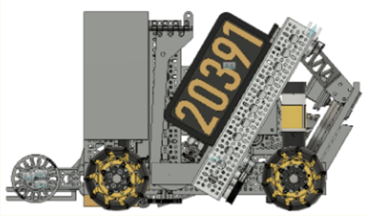

Competition
For the FTC Centerstage Challenge, the robot had to score Pixels during autonomous, driver-controlled, and endgame periods. I worked on mechanical design, CAD, fabrication, and competition mechanisms.
Mechanisms
I worked on a precision paper-airplane launcher and a Pixel intake/claw system. The launcher used a compact 3D-printed airplane and rubber-band launch system, with the design focused on consistent positioning and scoring rather than maximum distance. The Pixel intake used flexible rollers to pull in flat Pixels and orient them for the claw and linear slides.


What I learned
This was my first substantial engineering experience and my first exposure to 3D modeling, CAM simulations, CNC fabrication, and designing around tolerances. Team workflow was also an engineering lesson: CAD file management, tolerancing, and coordinating work between designers mattered just as much as the geometry itself.